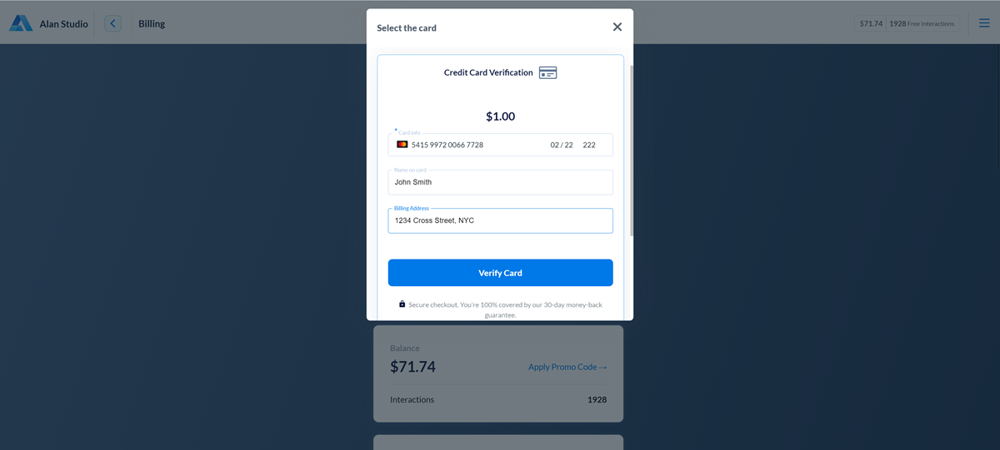
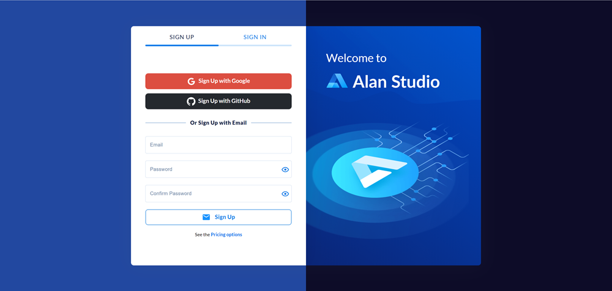
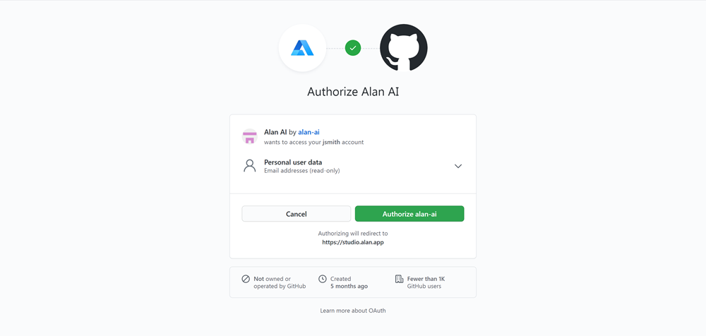

Billing and subscriptions¶
When you sign up for Alan Studio, Alan creates a billing account for you. From the billing account, you can pay for the services provided by Alan.
All information about subscriptions, payments and billing is available in the Billing and Subscription views of Alan Studio. To access them, in the top right corner of Alan Studio, click the main menu icon and select Billing or Subscription.
When working with billing data and subscriptions, you can:
Note
In Alan, you can be charged per interaction or per user, depending on your pricing plan.
An interaction is a user’s utterance associated with Alan’s reply.
A user is counted as a device from which the user connects to Alan. The user initiating several dialog sessions from the same device is considered a unique user.
Changing the pricing plan¶
When you sign up for Alan Studio, the Free Tier plan is applied to your account. You get a limited number of interactions that you can spend to get to know the Alan Platform functionality.
To use the full version and remove the restrictions of the Free Tier, you must change the pricing plan. The pricing plan is applied to all projects of your account in Alan Studio. Limitations of the plan also apply to all projects of the account.
Warning
To be able to change the pricing plan, you must have the sufficient amount on your Alan Studio balance. To switch to the Enterprise plan, contact the Alan Sales Team.
To change the pricing plan:
In the top right corner of Alan Studio, click the main menu icon and select Subscription.
In the Alan pricing plans view, review the pricing plans and the functionality they offer, choose the one that works best for you and in the plan widget, click Change plan.
Adding funds to the balance¶
When the balance on your account runs low, Alan notifies you about it with a warning in Alan Studio. In this case, you need to add funds to your Alan Studio balance.
To add funds:
In the top right corner of Alan Studio, click the main menu icon and select Billing.
In the Balance widget, click Add Funds.
In the Choose your payment method window, select the payment method:
With a credit card
With a PayPal account
By applying a promo code
Provide the payment details and complete the transaction. The funds will be transferred to your account.
Tip
You can check the history of payments in the Credit History widget at the bottom of the Billing view.
Changing the payment card details¶
On a recurring pricing plan, you can change the payment card details: add a new card from which future payments will be charged.
To change the card details:
In the top right corner of Alan Studio, click the main menu icon and select Billing.
In the Current Plan widget, select Change Card > Add new card.
Provide the credit card details and click Verify Card.
The previously added payment cards will still be available in the list, and you can switch between the cards when needed.
Adding free interactions¶
Alan provides you with the ability to add free interactions to your account. You can use this option if you are evaluating the Alan AI Platform and want to get familiar with it. The number of free interactions is enough to get you started.
To get free interactions:
In the Alan Studio signup form, select to sign up with GitHub.
Tip
If you already have an account in Alan Studio, you can connect it to your GitHub account. In the Billing view, in the Add Free Interactions widget, click Connect your GitHub account.
If you are not already signed in, sign in to GitHub.
Agree to authorize Alan to access your GitHub account data.
Once you sign up or connect your accounts, go to the Alan AI GitHub and star Alan repositories. For a star for each Alan’s repository, you get free interactions to your account.
Warning
When you’ve run out of free interactions, you must change your plan and add funds to your balance to proceed with Alan.